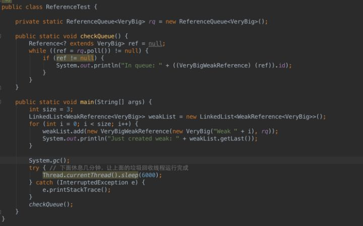

强引用，软引用，弱引用，幻想引用有什么区别，他们的使用场景是什么¶
主要是为了更好的进行内存管理而设置的一套机制，粗俗的说就是不同的引用垃圾回收的力度不同。
会有坑，不推荐使用，除非你真正理解并了解其实现。 能做到这点的人全世界不超过100人。 直到2015年底开发组还在讨论修改三者的定义描述。
从 java 1.2 版本引入 java.lang.ref 包，共 4 种引用，这 4 种引用的级别高低依次为：
强引用 > 软引用 > 弱引用 > 虚引用
强引用 Strong Reference¶
强引用是使用最普遍的引用。如果一个对象具有强引用，那垃圾回收器绝不会回收它。当内存空间不足，Java 虚拟机宁愿抛出 OutOfMemoryError 错误，使程序异常终止，也不会靠随意回收具有强引用的对象来解决内存不足的问题。强引用就是我们常使用到的引用，写法如下：
A a = new A();
B b = new B(a);
上面两个强引用就这样产生了，并且 a 是对象 A 的引用，b 是对象 B 的引用，而 B 还依赖于 A，那么就认为 B 是可以到达 A 的。
当把 a = null 时，这时 a 不再指向 A 的地址。按道理：当某个对象不再被其它对象引用的时候，会被 GC 回收，而 a = null 时，A 对象不能被回收，B 还依赖于 A，造成了内存泄漏。
强引用最重要的就是它能够让引用变强，这就决定了它和GC的交互，如果一个对象通过强引用链接可到达，它就不会被 GC 回收。当然，如果你不想让正在使用的对象被回收，这正是强引用的强大之处。
看到上述示例强引用带来的内存泄漏问题，我们要如何避免？
详见 内存溢出与内存泄漏的区别
弱引用 Weak Reference¶
弱引用就是将对象留在内存的能力弱于强引用，使用 WeakReference 。垃圾回收器会帮你来决定引用的对象何时回收并且将对象从内存移除。不过，由于垃圾回收器是一个优先级很低的线程，因此不一定会很快发现那些只具有弱引用的对象。
A a = new A();
WeakReference b = new WeakReference(a);//B b = new B(a);a = null;
当 a = null 时，这个时候 A 只被弱引用依赖，GC 回立刻回收 A 对象，这就是弱引用的好处，避免内存泄漏。
ThreadLocal中，获取到线程私有对象是通过线程持有的一个threadLocalMap，然后传入ThreadLocal当做key获取到对象的，这时候就有个问题，如果你在使用完ThreadLocal之后，将其置为null，这时候这个对象并不能被回收，因为他还有 ThreadLocalMap->entry->key的引用，直到该线程被销毁，但是这个线程很可能会被放到线程池中不会被销毁，这就产生了内存泄露，jdk是通过弱引用来解决的这个问题的，entry中对key的引用是弱引用，当你取消了ThreadLocal的强引用之后，他就只剩下一个弱引用了，所以也会被回收。
引用队列 ReferenceQueue¶
配合 Reference 子类等使用，当引用对象所指向的内存空间被 GC 回收后，该引用对象则被追加到引用队列的末尾。根据下面的代码，说明只供 Reference 实例调用，且只能调用一次。
- Reference<? extends T> ReferenceQueue#poll() ，从队列中出队一个元素，若队列为空则返回null。
- Reference<? extends T> ReferenceQueue#remove() ，从队列中出队一个元素，若没有则阻塞直到有元素可出队。
- Reference<? extends T> ReferenceQueue#remove(long timeout) ，从队列中出队一个元素，若没有则阻塞直到有元素可出队或超过timeout指定的毫秒数（由于采用wait(long timeout)方式实现等待，因此时间不能保证）。
/**
* Enqueue the reference object on the receiver.
* @param reference reference object to be enqueued.
* @return true if the reference was enqueued.
*/
boolean enqueue(Reference<? extends T> reference) {
synchronized (lock) {
if (enqueueLocked(reference)) {
lock.notifyAll();
return true;
}
return false;
}
}
引用队列有如下实例方法
当队列中出队一个元素时，若队列为空返回 null，否则返回队列。
public Reference<? extends T> poll() {
synchronized (lock) {
if (head == null) return null;
return reallyPollLocked();
}
}
//入队
private Reference<? extends T> reallyPollLocked() {
if (head != null) {
Reference<? extends T> r = head;
if (head == tail) {
tail = null;
head = null;
} else {
head = head.queueNext;
} // Update queueNext to indicate that the reference has been
// enqueued, but is now removed from the queue.
r.queueNext = sQueueNextUnenqueued;
return r;
}
return null;
}
从队列中出队一个元素，若没有则阻塞直到有元素可出队或超过 timeout 指定的毫秒数（由于采用 wait(long timeout) 方式实现等待，因此时间不能保证）。
public Reference<? extends T> remove(long timeout)
throws IllegalArgumentException, InterruptedException {
if (timeout < 0) {
throw new IllegalArgumentException("Negative timeout value");
}
synchronized (lock) {
Reference<? extends T> r = reallyPollLocked();
if (r != null) return r;
long start = (timeout == 0) ? 0 : System.nanoTime();
for (; ; ) {
lock.wait(timeout);
r = reallyPollLocked();
if (r != null) return r;
if (timeout != 0) {
long end = System.nanoTime();
timeout -= (end - start) / 1000_000;
if (timeout <= 0) return null;
start = end;
}
}
}
}
软引用 SoftReference¶
软引用阻止 GC 回收其指向对象的能力要强一些。
通过 SoftReference 表示， 如果一个对象只具有软引用，则内存空间足够，垃圾回收器就不会回收它；如果内存空间不足了，就会回收这些对象的内存。
只要垃圾回收器没有回收它，该对象就可以被程序使用。
当 JVM 中的内存不足的时候，垃圾回收器会释放那些只被软引用所指向的对象。如果全部释放完这些对象之后，内存还不足，才会抛出 OutOfMemoryError。
软引用非常适合于创建缓存。当系统内存不足的时候，缓存中的内容是可以被释放的。比如考虑一个图像编辑器的程序。该程序会把图像文件的全部内容都读取到内存中，以方便进行处理。而用户也可以同时打开多个文件。当同时打开的文件过多的时候，就可能造成内存不足。如果使用软引用来指向图像文件内容的话，垃圾回收器就可以在必要的时候回收掉这些内存。软引用可以和一个引用队列（ReferenceQueue）联合使用，如果软引用所引用的对象被垃圾回收器回收，JVM 就会把这个软引用加入到与之关联的引用队列中。
软引用与弱引用的区别在于： 只具有弱引用的对象拥有更短暂的生命周期。在垃圾回收器线程扫描它所管辖的内存区域的过程中，一旦发现了只具有弱引用的对象，不管当前内存空间足够与否，都会回收它的内存。
示例：实现学生信息查询操作时有两套数据操作的方案
一、将得到的信息存放在内存中，后续查询则直接读取内存信息；（优点：读取速度快；缺点：内存空间一直被占，若资源访问量不高，则浪费内存空间）
二、每次查询均从数据库读取，然后填充到TO返回。（优点：内存空间将被GC回收，不会一直被占用；缺点：在GC发生之前已有的TO依然存在，但还是执行了一次数据库查询，浪费IO）
通过软引用解决：
ReferenceQueue q = new ReferenceQueue();
// 获取数据并缓存
Object obj = new Object();
SoftReference sr = new SoftReference(obj, q);
// 下次使用时
Object obj = (Object)sr.get();
if (obj == null){
// 当软引用被回收后才重新获取
obj = new Object();
}
// 清理被收回后剩下来的软引用对象
SoftReference ref = null;
while((ref = q.poll()) != null){
// 清理工作
}

虚引用 Phantom Reference¶
“虚引用”顾名思义，就是形同虚设，与其他几种引用都不同，虚引用并不会决定对象的生命周期。
我们可以通过 get 方法来得到其指定对象，它的唯一作用就是当其指向的对象被回收之后，自己被加入到引用队列，用作记录该引用指向的对象已被销毁。虚引用职能在其指向的对象从内存中移除掉之后才会加入到引用队列。其 get 方法一直返回 null 就是为了阻止其指向的几乎被销毁的对象重新复活。
虚引用主要用来跟踪对象被垃圾回收器回收的活动。
虚引用与软引用和弱引用的一个区别在于： 虚引用 必须 和引用队列 （ReferenceQueue）联合使用。当垃圾回收器准备回收一个对象时，如果发现它还有虚引用，就会在回收对象的内存之前，把这个虚引用加入到与之 关联的引用队列中。
ReferenceQueue queue = new ReferenceQueue ();
PhantomReference pr = new PhantomReference (object, queue);
程序可以通过判断引用队列中是否已经加入了虚引用，来了解被引用的对象是否将要被垃圾回收。如果程序发现某个虚引用已经被加入到引用队列，那么就可以在所引用的对象的内存被回收之前采取必要的行动。
虚引用使用场景主要有两个。
1、它允许你知道具体何时其引用的对象从内存中移除。而实际上这是Java中唯一的方式。这一点尤其表现在处理类似图片的大文件的情况。当你确定一个图片数据对象应该被回收，你可以利用虚引用来判断这个对象回收之后在继续加载下一张图片。这样可以尽可能地避免可怕的内存溢出错误。
2、虚引用可以避免很多析构时的问题。finalize 方法可以通过创建强引用指向快被销毁的对象来让这些对象重新复活。然而，一个重写了 finalize 方法的对象如果想要被回收掉，需要经历两个单独的垃圾收集周期。在第一个周期中，某个对象被标记为可回收，进而才能进行析构。
但是因为在析构过程中仍有微弱的可能这个对象会重新复活。这种情况下，在这个对象真实销毁之前，垃圾回收器需要再次运行。因为析构可能并不是很及时，所以在调用对象的析构之前，需要经历数量不确定的垃圾收集周期。这就意味着在真正清理掉这个对象的时候可能发生很大的延迟。这就是为什么当大部分堆被标记成垃圾时还是会出现烦人的内存溢出错误。
总结

WeakHashMap¶
由于WeakHashMap的键对象为弱引用，因此当发生GC时键对象所指向的内存空间将被回收，被回收后再调用size、clear或put等直接或间接调用私有expungeStaleEntries方法的实例方法时，则这些键对象已被回收的项目（Entry）将被移除出键值对集合中。
下列代码将发生OOM
public class WeakHashMapTest1 {
public static void main(String[] args) throws Exception {
List<WeakHashMap<byte[][], byte[][]>> maps = new ArrayList<WeakHashMap<byte[][], byte[][]>>();
for (int i = 0; i < 1000; i++) {
WeakHashMap<byte[][], byte[][]> d = new WeakHashMap<byte[][], byte[][]>();
d.put(new byte[1000][1000], new byte[1000][1000]);
maps.add(d);
System.gc();
System.err.println(i);
}
}
}
而下面的代码因为集合的Entry被移除因此不会发生OOM
public class WeakHashMapTest2 {
public static void main(String[] args) throws Exception {
List<WeakHashMap<byte[][], byte[][]>> maps = new ArrayList<WeakHashMap<byte[][], byte[][]>>();
for (int i = 0; i < 1000; i++) {
WeakHashMap<byte[][], byte[][]> d = new WeakHashMap<byte[][], byte[][]>();
d.put(new byte[1000][1000], new byte[1000][1000]);
maps.add(d);
System.gc();
System.err.println(i);
for (int j = 0; j < i; j++) {
// 触发移除Entry操作
System.err.println(j+ " size" + maps.get(j).size());
}
}
}
}
java.lang.ref.Reference¶
Reference内部通过一个 {Reference} next 的字段来构建一个Reference类型的单向链表。另外其内部还包含一个 ReferenceQueue<? super T> queue 字段存放引用对象对应的引用队列，若Reference子类构造函数中没有指定则使用ReferenceQueue.NULL，也就是说每个软、弱、虚引用对象必定与一个引用队列关联。
Reference还包含一个静态字段 {Reference} pending （默认为null），用于存放被GC回收了内存空间的引用对象单向链表。Reference通过静态代码块启动一个优先级最高的守护线程检查pending字段为null，若不为null则沿着单向链表将引用对象追加到该引用对象关联的引用队列当中（除非引用队列为ReferenceQueue.NULL）。守护线程的源码如下：
public void run() {
for (; ; ) {
Reference r;
synchronized (lock) {
if (pending != null) { // 检查pending是否为null
r = pending;
Reference rn = r.next;
pending = (rn == r) ? null : rn;
r.next = r;
} else {
try {
lock.wait(); // pending为null时，则将当前线程进入wait set，等待GC执行后执行notifyAll
} catch (InterruptedException x) {
}
continue;
}
}
// Fast path for cleaners
if (r instanceof Cleaner) {
((Cleaner) r).clean();
continue;
}
// 追加到对应的引用队列中
ReferenceQueue q = r.queue;
if (q != ReferenceQueue.NULL) q.enqueue(r);
}
}
注意：由于通过静态代码块进行线程的创建和启动，因此Reference的所有子类实例均通过同一个线程进行向各自的引用队列追加引用对象的操作。
CountDownTimer 中使用到弱引用讲解¶
上文中，在倒计时 Demo 中，用到了弱引用，看完弱引用之后，你应该对弱引用有了大致了解，那么下面针对上一章内容，我们再回过头来看看为什么要用弱引用吧。我们是要用 TextView 来实现倒计时功能，如果直接用强引用，TextView 在被其它对象引用不能及时回收时，可能会造成内存泄漏。
/**
* 在按钮上启动一个定时器
* @param tvVerifyCode 验证码控件
* @param defaultString 按钮上默认的字符串
* @param max 失效时间（单位：s）
* @param interval 更新间隔（单位：s）
*/
public static void startTimer(final WeakReference<TextView> tvVerifyCode,
final String defaultString,
int max,
int interval) {
tvVerifyCode.get().setEnabled(false);
new CountDownTimer(max * 1000, interval * 1000 - 10) {
@Override
public void onTick(long time) {
if (null == tvVerifyCode.get())
this.cancel();
else
tvVerifyCode.get().setText("" + ((time + 15) / 1000) + "s");
}
@Override
public void onFinish() {
if (null == tvVerifyCode.get()) {
this.cancel();
return;
}
tvVerifyCode.get().setEnabled(true);
tvVerifyCode.get().setText(defaultString);
}
}.start();
}